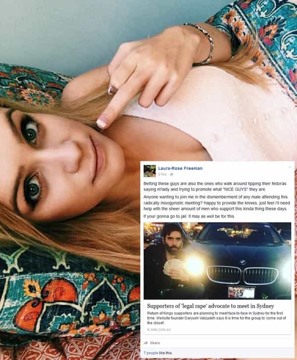
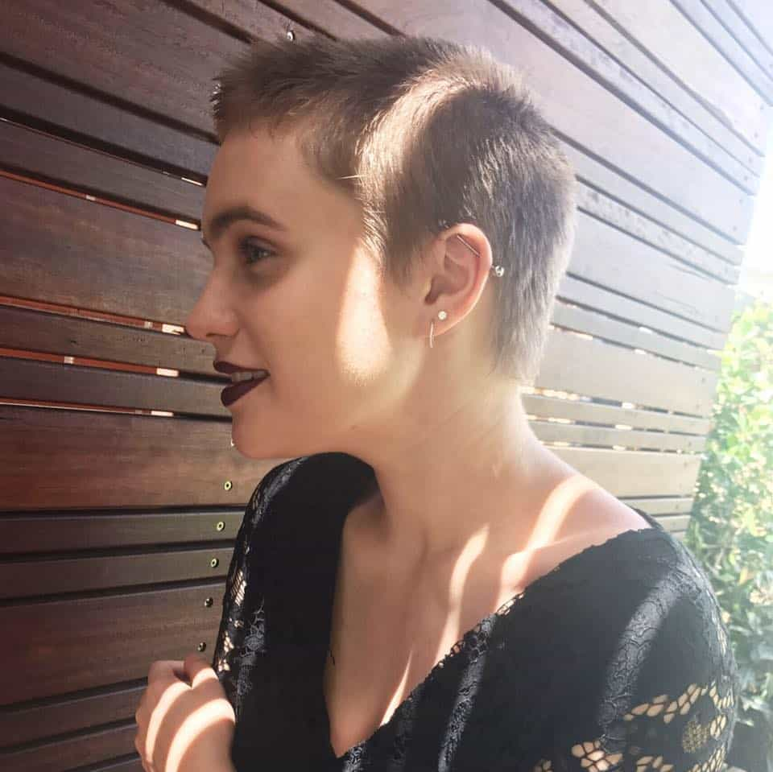
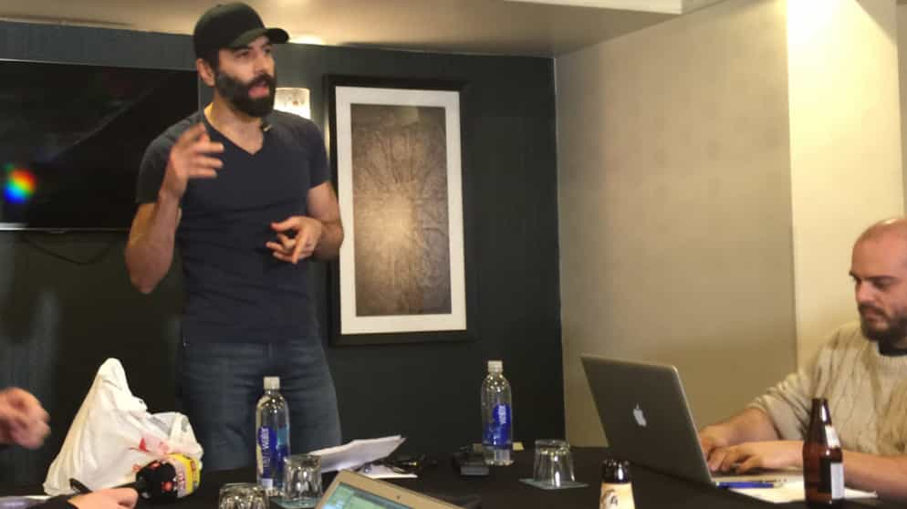

< < < Back
Academic Finds 84 Serious Threats Of Violence Directed At Roosh And Return Of Kings Readers – Return Of Kings
An Australian academic has found that at least 84 serious threats of violence and “fantasies of violence” were directed against Roosh and Return Of Kings readers in early 2016. Shockingly, these 84 instances come from posts, comments, and replies in only three Australian-based Facebook event groups, two in Sydney and one in Melbourne. These SJW events, like others around the world, were planned in response to Roosh’s announcement of ROK meet-ups. The meet-ups were later called off after a massive escalation in very credible violent threats against both Roosh and his fans.
In his analysis, Dr. Stuart Bender of Western Australia’s Curtin University paid special attention to my article about Phoebe Moloney’s biased reporting on our planned meet-ups and the knife attack group that this bias spawned. I was pleasantly surprised with Dr. Bender’s rather even-handed approach to both my writing and Roosh’s, even if I did not agree with all his conclusions. The 84 serious threats of violence and fantasies of violence catalogued by Dr. Bender do not include the oftentimes more outrageous threats of violence on Laura-Rose Freeman‘s “The mutilation of ‘legal rape’ supporters genitalia” Facebook event (archive). The “legal rape” accusation against Return Of Kings has been conclusively debunked, as Roosh’s satire drew very heavily from the Jonathan Swift classic A Modest Proposal.
It is a pity that Dr. Bender chose to refer to Laura-Rose Freeman as “L.R.” to partially preserve her anonymity. Nonetheless, his quoting of her various violent threats is on point:
This teams goal is to (in a humane a way as possible) dismember or mutilate the genitals of the men who support this atrocious movement (L.R. (female) in the Mutilation of “Legal Rape” Supporters Genitalia, 2016). [6]
Anyone wanting to join me in the dismemberment of any male attending this radically misogynistic meeting? Happy to provide the knives […] If your gonna go to jail it may as well be for this (cited in Brown, 2016). [7]
Might I add that this is a deeply disturbed young lady.
Before SJW knife group:

After SJW knife group:

I take no pleasure in saying that this girl needs psychiatric help, particularly when you take into account her seeming obsession with knives, blood, and genital mutilation.
So how many more threats of violence were out there and are still out there?

Roosh at his press conference in February 2016. He had to hire private security after threats against both himself and his family.
Once again, Dr. Bender’s approach was much more balanced than I expected. In addition to the public threats on the four Facebook groups (the original 84 plus the ones from Laura-Rose Freeman’s group), he gave credence to the very serious private message threats that Roosh received. But remember, this is just four locations on one social media platform.
As one of the people included in the organizational structure for the meet-ups, I distinctly remember serious threats of violence erupting in the Facebook comments for major Australian media outlets, such as Fairfax Media and Channel Seven News. There were also particularly nasty responses from cities across the other side of the world, Glasgow and Toronto chief among them.
It is fair to say that Bender’s analysis, as important as it is, touches on less than 1% of all the very violent threats and related commentary one could still find on Facebook against Roosh and Return Of Kings. In my article on Phoebe Moloney’s bias, I mentioned a few of these, including from a former New Zealander contestant on The Amazing Race.
Our claims of bias against Fairfax Media and other media outlets have been thoroughly vindicated
Because Fairfax media and its two mastheads, The Sydney Morning Herald and Melbourne’s The Age, were the first participants in trying to inflame potential violence against Roosh and the rest of us, I contacted the organization for clarification. In response, Phoebe Moloney cried, as I have previously recounted, and Managing Editor Stuart Washington steadfastly refused to admit the coverage had been one-sided.
The only time Fairfax really conceded the prospect of violence against us was when they reported on Roosh’s announcement that the meet-ups were being called off. Even so, this amounted to a simple regurgitation of Roosh’s words, rather than a proper journalistic attempt to confirm that the violent threats were real, which indeed they were.
Media outlets, if they intend to do their job, have a responsibility for fair reporting on peaceful matters, let alone on those occasions when people are receiving violent threats.
Thanks go to the Curtin University student, “John,” for bringing Dr. Bender’s paper to my attention.
Read More: Phoebe Moloney’s False Reporting On The ROK Meetup Incited A Knife Wielding Mob